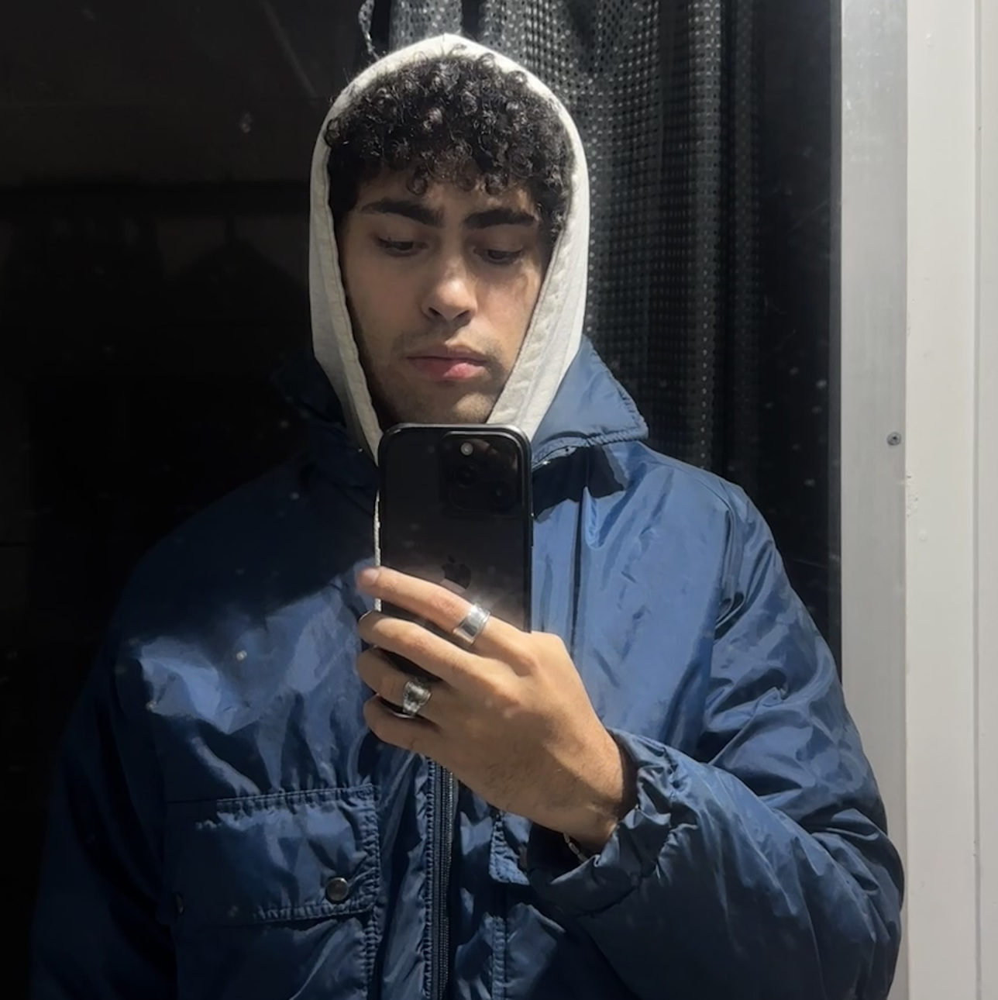

MEET CHARLIE.
Writer, journalist, and media personality with business development experience across creative industries. Based in Brisbane, Australia. Publishing cultural commentary on Status Quo. and driving independent creative productions.
ABOUT.

My name is Charlie. I'm a writer, journalist, and media personality with business development experience in creative industries.
I use my experience in writing, journalism, content creation, and music production/songwriting to inform my creative direction and strategy.
I operate at the intersection of media production and creative business development & strategy, offering consulting and services in these areas.
My experience includes:
- Creative direction on event promotion campaigns.
- Event planning and organising.
- The set-up, concept design, and hosting of live-streamed music events.
- On-set producer for music videos and productions featuring actors and crew.
- Video script writing and conceptualising.
- Music production and writing.
- Creative and commercial strategy for creative industry start-ups and brands.
Backed by hands-on experience in event production and commercial development within creative sectors, I blend sharp narrative storytelling with practical industry strategy—bridging underground culture and professional execution.
Through “Status Quo.” I deliver unfiltered gonzo journalism, cultural critique, and essays on navigating modern life.
CONTACT.
Let's build something honest.
Available for journalistic assignments, editorial writing, media appearances, event production consulting, and creative business development.
Accepting select writing commissions, media engagements, and creative business development projects for 2026.